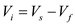

Step 1:
(a)
Refer to the circuit diagram of feedback trans-conductance amplifier in Figure P10.27 in the textbook.
The input to the op-amp is,

The output current develops feedback voltage  across the resistor
across the resistor  . The feedback voltage
. The feedback voltage  is subtracted from the source voltage
is subtracted from the source voltage  , which is performed by differencing action of the differential amplifier. A positive change in
, which is performed by differencing action of the differential amplifier. A positive change in  will result in a positive change at gate of Q, this causes
will result in a positive change at gate of Q, this causes  to increase. As
to increase. As  increases, the feedback voltage
increases, the feedback voltage  increases positively, which is the same polarity assumed for change in .
increases positively, which is the same polarity assumed for change in .
Therefore, the feedback in the circuit is negative.
Step 2:
(b)
After opening the feedback loop by breaking the connection of  , the small-signal equivalent circuit is as shown in Figure 1.
, the small-signal equivalent circuit is as shown in Figure 1.
Step 3:
Apply current division rule to find the current  for the circuit in Figure 1.
for the circuit in Figure 1.
…... (1)
From Figure 1,
The differential voltage  is,
is,
The voltage  is,
is,
Substitute  for
for  in equation.
in equation.
 …… (2)
…… (2)
Step 4:
Substitute  for
for  in equation (1).
in equation (1).
 …… (3)
…… (3)
Since ,

Thus, the expression for forward gain is.
Step 5:
(c)
Consider the circuit in Figure 2.
Step 6:
Find the expression for feedback gain .
The voltage across the resistor R is,
From equation (2), . Hence,
From equation (3), . Hence,
Thus, the expression for  is .
is .
Step 7:
(d)
Find the expression for .
The overall gain of the negative feedback circuit is,

Since and ,
…… (4)
Thus, the expression for  is .
is .
Step 8:
(e)
Derive the condition for .
From equation (4),
Hence,
Thus, the condition for  is .
is .